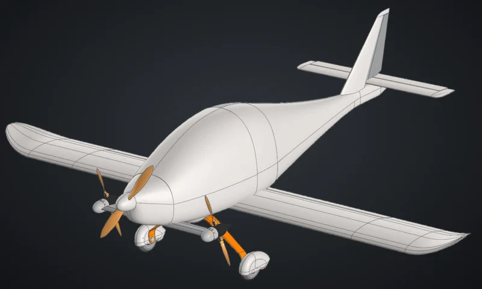

- Pučiamas sparnas
- Keliamosios jėgos koeficientas 3,5–4,2 vietoj 1,2: atsiplėšimas 52 km/h, smuka 45 km/h, įsibėgėjimas 36 m.
- Antra jėgainė
- Sustojus pagrindiniam varikliui – apie 10 km horizontalaus skrydžio elektros varikliais vietoj 2,4 km sklandymo.
- Stovėjimo vieta, ne angaras
- Greitai nuimamas sparnas: lėktuvas telpa į automobilio stovėjimo vietą ar priekabos dėžę.
- Su NERINGA borte
- Autonomija ir platesnis oro sąlygų langas jau dabar; ateityje – visiškai automatinis skrydis nuo juostos iki juostos.
Kodėl sparnas, o ne eVTOL
- Miesto eVTOL
- Apie 20 minučių skrydžio, kai aviacijos taisyklės apie 15 minučių laiko atsargai. Kabant reikia traukos, maždaug 1,5 karto didesnės už svorį.
- Binom1
- Iki 5 valandų skrydžio. Nuo maždaug 60 km/h lėktuvą laiko sparnas; trauka tik įveikia pasipriešinimą – nuo penktadalio iki ketvirtadalio svorio.

- Kilimo masė
- 250–280 kg
- Kreiserinis / didž.
- 170 / 220 km/h
- Nuotolis
- ≈ 600 km · 5 h
- Kilimas ir tūpimas
- 40–60 m
- Kabinos plotis
- 1,1 m
- Bepilotė versija
- 100 kg · ≈ 5 h
Apskaičiuoti duomenys; bepilotės versijos duomenys – įverčiai.